Префектура Канагава · Хаконэ · искусство
Музей Нарукава в Хаконэ: японская живопись, озеро Аси и Фудзи в окне
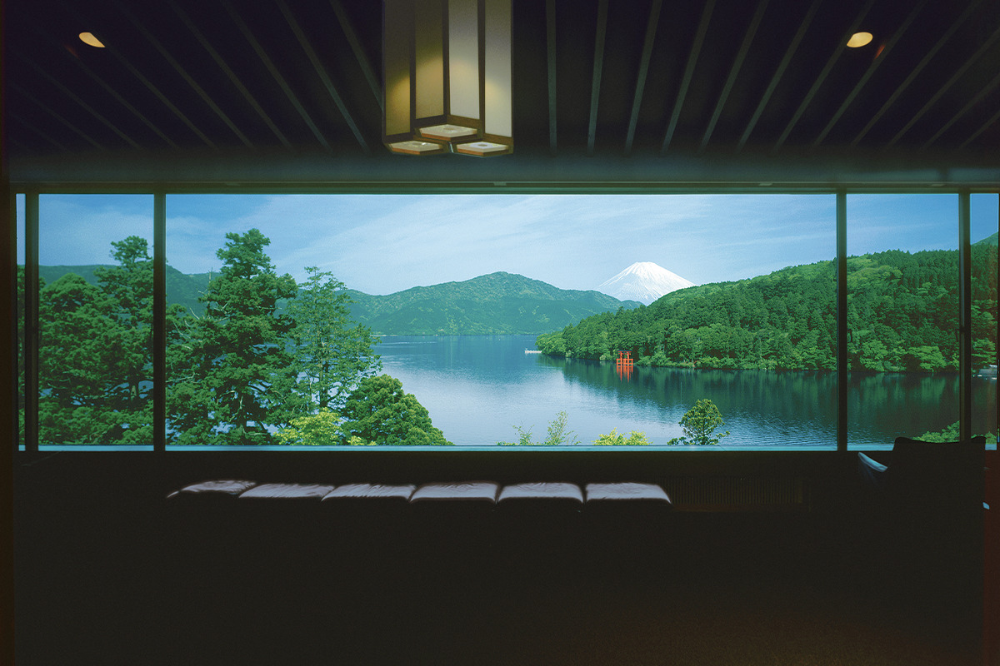
На берегу озера Аси в Хаконэ стоит частный музей, который собирает японскую живопись нихонга второй половины XX века и наших дней. После залов с картинами посетителя ждёт ещё одна картина: озеро и Фудзи в окне длиной 50 метров.
Коллекция
Более 4000 работ современной нихонга
Музей Нарукава открылся в апреле 1988 года как частное собрание на берегу озера Аси, в курортном городке Хаконэ. Он с самого начала сосредоточился на одном направлении: современной японской живописи нихонга. Главная задача музея в том, чтобы шире показывать живопись, созданную после войны. Коллекция насчитывает больше 4000 работ и продолжает расти.
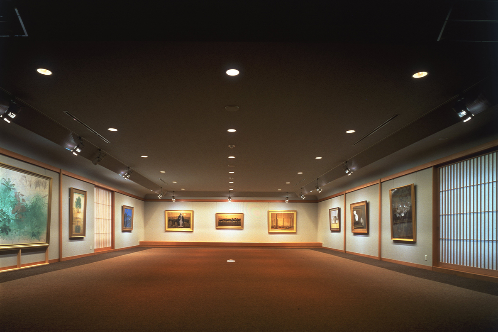
Ядро собрания составляют около 150 главных работ Кюдзина Ямамото и около 40 произведений Икуо Хираямы (1930–2009), включая рисунки. Кроме них здесь хранятся крупнейшие в Японии собрания работ Фумико Хори (1918–2019) и ещё одиннадцати художников, а по ряду других авторов коллекция входит в число двух лучших в стране. Так послевоенную нихонга можно рассмотреть здесь с самых разных сторон.
«Наш девиз: быть своеобразным музеем, который идёт рядом с современными художниками и заранее собирает шедевры будущего»
директор музея
По словам директора, новая нихонга развивалась вместе с послевоенной Японией и сильно отличается от сдержанной довоенной живописи: она насыщенная, плотная, с долгим послевкусием. Художники гордятся традицией картин «ямато-э», идущей со времён Хэйан, но накладывают краски слой за слоем, обновляют композицию и образы. В эти картины вписаны и сложные чувства человека в мире, ставшем международным. Первой вехой нового движения директор считает объединение «Содзо бидзюцу», основанное в январе 1948 года, а его лидером называет Кюдзина Ямамото.
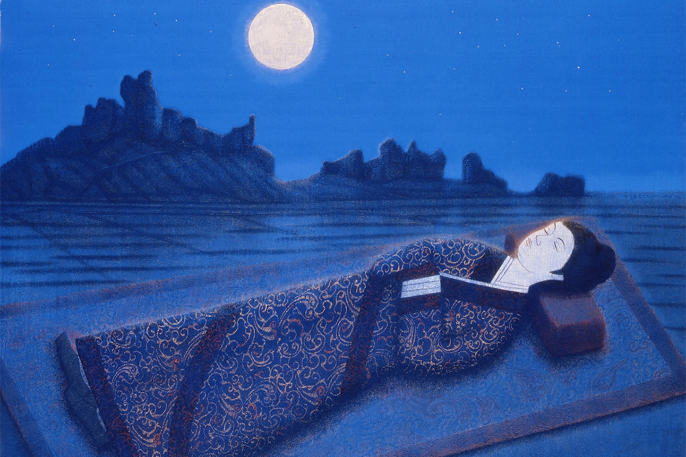
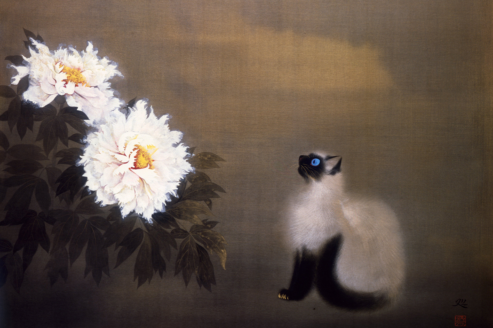
Собрать признанных мастеров музей считает лишь частью своей работы. Настоящей миссией директор называет открывать будущее японской живописи. Музей рано замечает и активно покупает работы пока неизвестных, но многообещающих художников с характером.
«Современный музей существует не только для того, чтобы подтверждать заслуги прославленных мастеров. Музей живёт, и художники живут. Вместе они передают богатые чувства своего времени»
директор музея
Здесь уверены, что каждый день появляются работы, от которых будет зависеть японская живопись через 50 и 100 лет. Читая послание этих будущих шедевров вместе с посетителями, музей поддерживает художников, которые смотрят вперёд.
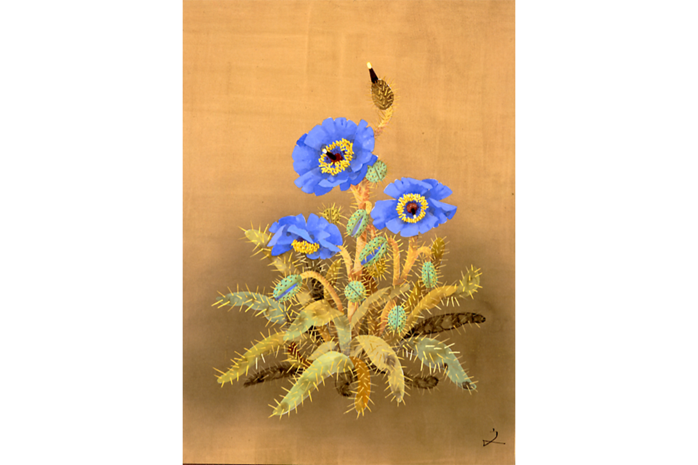
Вид
Озеро Аси как картина в раме
После залов стоит подняться в смотровую гостиную. Оконная рама здесь работает как багет: за стеклом раскрывается панорама озера Аси, похожая на огромный свиток. Окна тянутся в общей сложности на 50 метров, и после картин этот вид производит не меньшее впечатление.
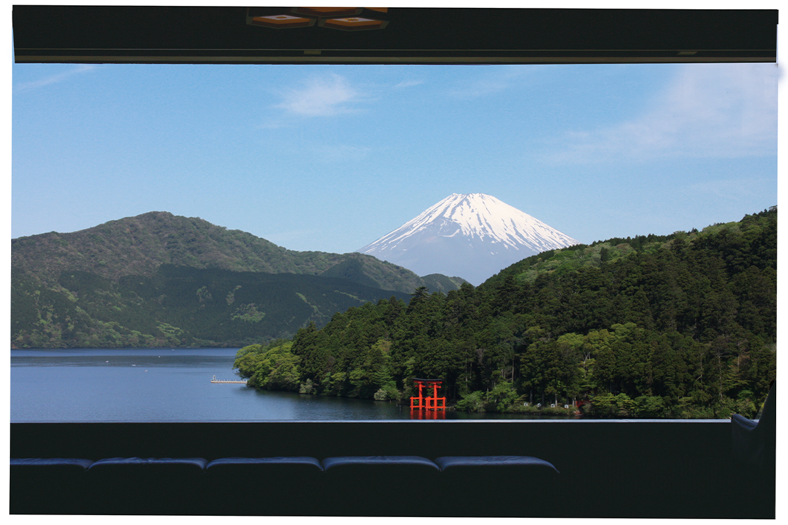
Рядом с гостиной работает кафе, где на этот вид можно смотреть за чашкой чая. Если сесть лицом к окну, кажется, что эта картина висит только для тебя. В отличие от живописи, пейзаж всё время меняется: плывут облака, по озеру ходят суда, и смотреть на него можно бесконечно.
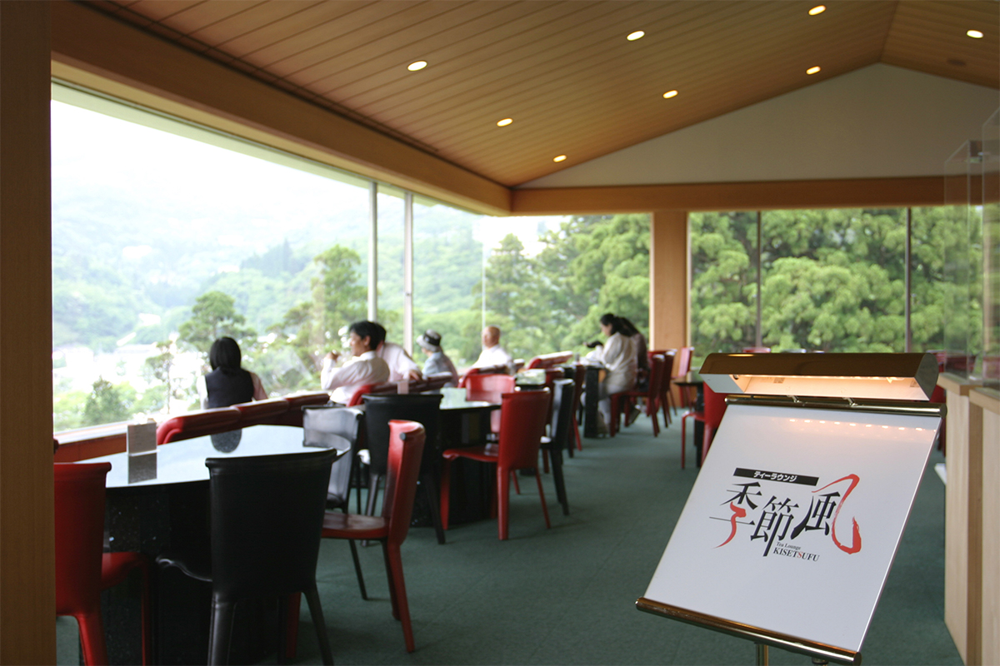
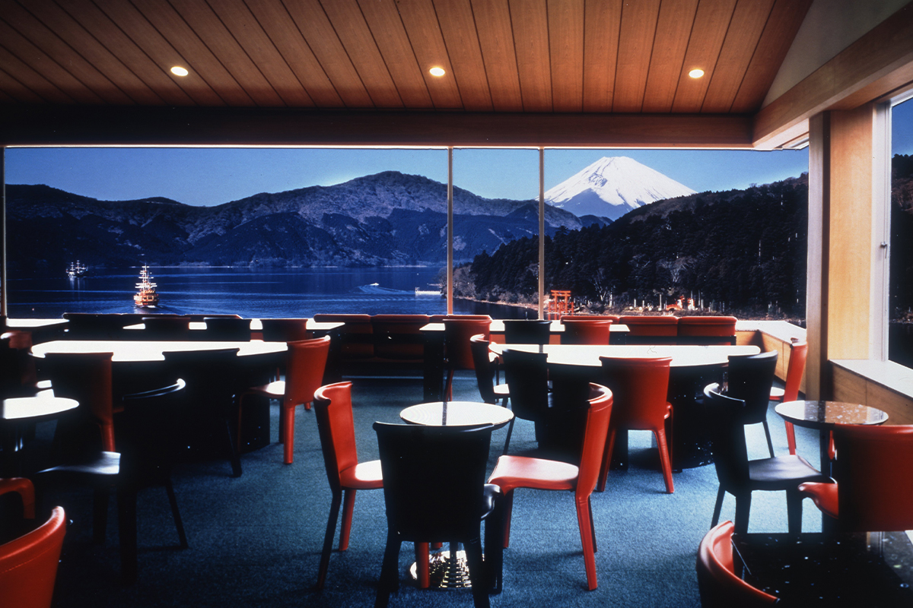
Зимой Фудзи стоит в снегу и видна целиком. Тихое зимнее озеро Аси, где словно остановилось время, совсем не похоже на летнее.
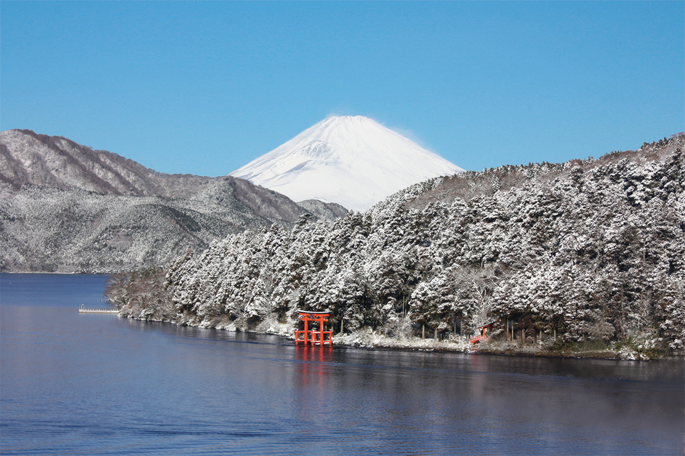
Вход
Ворота, дзидзо и кедр трёх тысяч лет
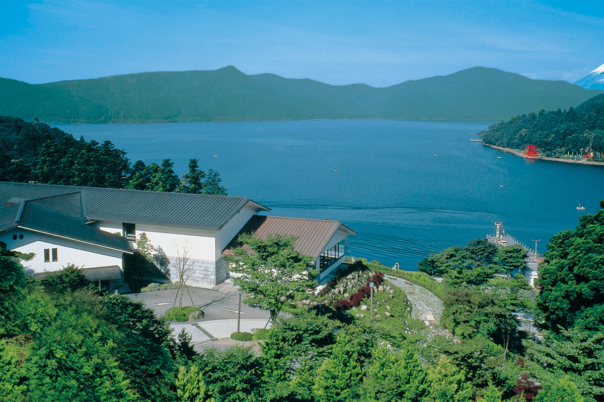
У входа стоят массивные ворота. Рядом с ними старая маленькая часовня «Мигавари дзидзо», давний символ Хаконэ, который хранит горный путь через перевал. Чуть дальше растёт «Дайо-суги», кедр, которому приписывают 3000 лет. Его история уходит в эпоху Дзёмон, и по долголетию его сравнивают со знаменитыми кедрами острова Якусима.
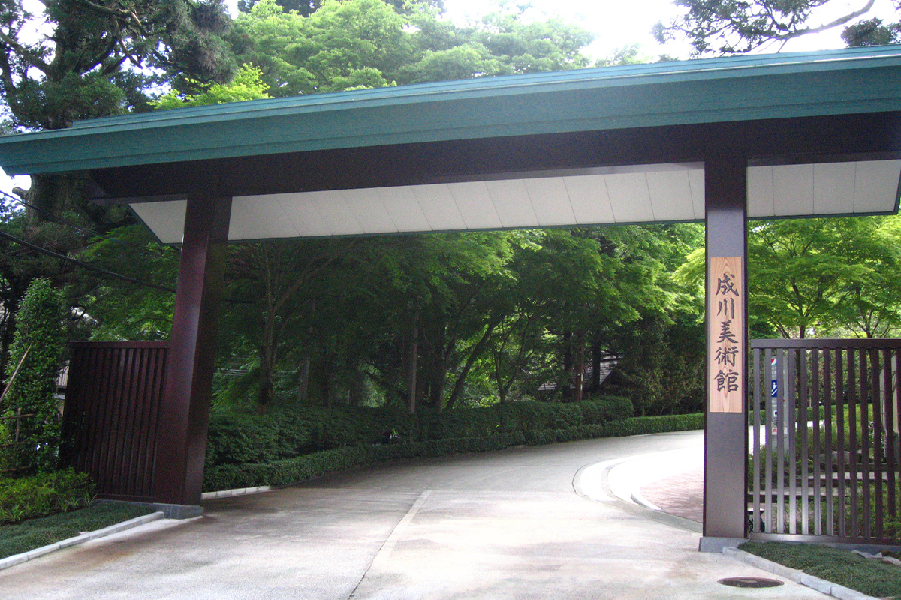
С берега озера Аси музей поддерживает японское искусство будущего и следит за тем, как растут художники нашего времени.
Музей Нарукава
- Адрес
- префектура Канагава, уезд Асигарасимо, Хаконэ, Мото-Хаконэ, 570
- Телефон
- +81 460-83-6828
- Часы работы
- 9:00–17:00
- Выходные
- без выходных
- Цены / Вход
- взрослые 1300 иен, студенты и старшеклассники 900 иен, школьники 600 иен, дошкольники бесплатно